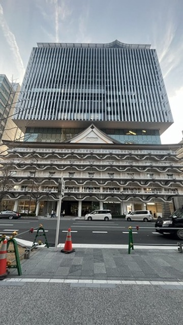
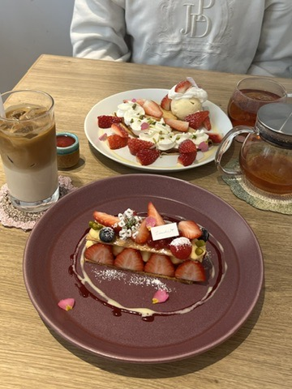
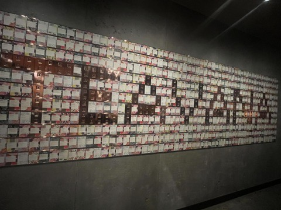

パット見 ”文字化けしてるだけ”に見える広告!?
あなたは解読することができますか？

📍電車のドア 撮影者：miyu(2024/9/25)
一見、ただ文字化けしているだけの変な広告。
だけどあることに注目してじっくり読んでみるとﾒｯｾ-ｼﾞが･･････！
見出しもとても遊び心があってデザイン性◎
スマホを見たり、疲れて寝ている人は気付けない！！
お城みたいな外観のホテル
📍大阪市難波 撮影者：miyu(2024/3/16)
大阪旅行をして街を歩いていたときに、外観がお城みたいでとても惹かれた。
なんの建物なのか気になり、調べてみると「ホテル」だった。
また、カフェも営業してるようだったので後日に行ってみた✨
↓↓↓↓↓
実は、全てコーヒーの紹介カード

📍Starbucks Reserve Roastary(R) Tokyo 撮影者：miyu(2024/4/1)
リザーブロースタリーを行った時に感動して思わず撮ったもの
コーヒーの紹介カードを使ってその階のコーナーを文字で表してる
他にもデザインにこだわっていて、ティーカップをイメージした壁も！